🎃 Friday the 13th · Julia, Emma and the Unlucky Day Challenge
Julia and Emma decide to spend Friday the 13th in a special way — breaking every superstition rule on purpose and seeing what happens. Audio-first reading lesson: vocab warm-up, pre-reading, full story, 8 T/F/NS, 10-gap cloze, 12 luck idioms, 7 speaking formats, diary writing, vocab capsule.
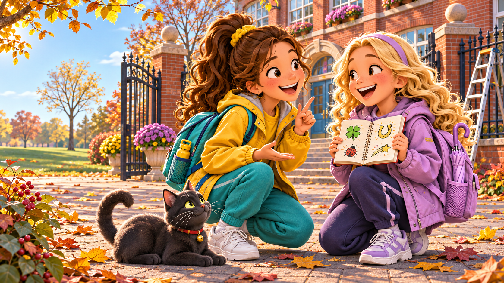
What is a superstition? 🤔
- 🇬🇧 UK · USA: Friday the 13th is unlucky. Black cat crossing your path brings bad luck. Opening an umbrella indoors brings bad luck.
- 🇷🇺 Russia: Monday is a heavy day. A black cat crossing the path brings bad luck. Spilling salt means a quarrel. Sitting down «on the road» before travelling brings luck.
- 🇮🇹 Italy: the number 17 is unlucky — not 13! Also Tuesday the 17th.
- 🇯🇵 Japan: the number 4 is unlucky — it sounds like the word for «death».
Match the superstition with its meaning
🎨 Pick the right superstition for each icon
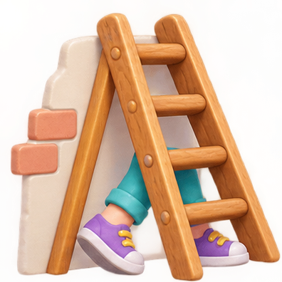
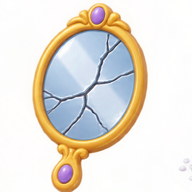
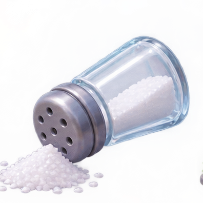
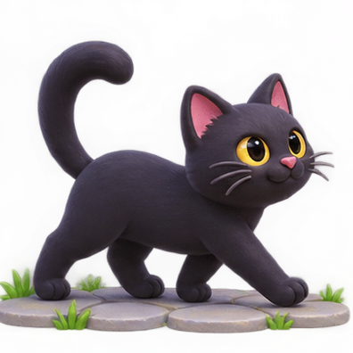
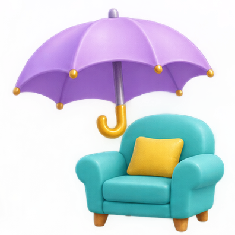
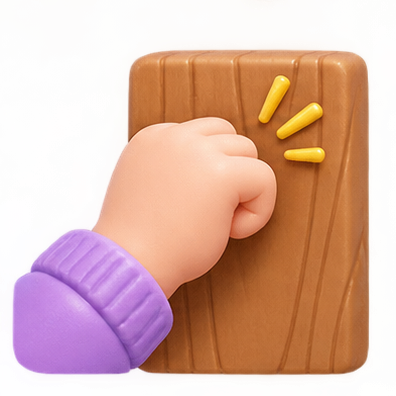
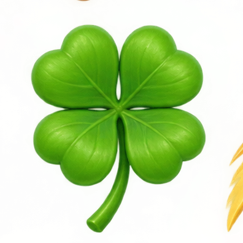
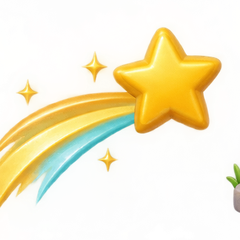
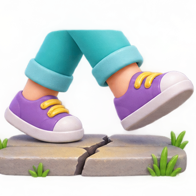
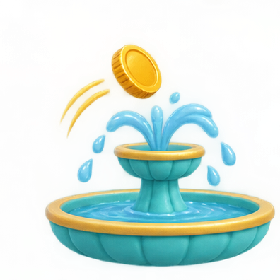
- to walk under a ladder means...
to climb up highto do a traditionally unlucky actionto enter a house quicklyto repair something
- to spill salt means...
to buy salt at the shopto add salt to foodto accidentally drop salt (and bring bad luck)to eat too much salt
- to break a mirror brings...
one week of bad luckseven years of bad luckone year of good luckno special meaning
- If a black cat crosses your path, you should...
pick up the catrun after it(according to superstition) turn back or take a different roadfeed it fish
- When people say «knock on wood!», they want...
to open a doorto keep their good luck safeto call someoneto wake up a friend
- A lucky charm is...
a nice person you likea small object (like a bracelet) that you believe brings good lucka very funny storya type of music
- «Fingers crossed!» means...
I am angry with youI am not telling the truthI hope something good will happenI am saying goodbye
- If a Russian spills salt, they often...
throw salt in the firethrow a pinch over their left shoulder to cancel the bad luckeat the salt from the floorbuy new salt immediately
Listen first · then answer 5 pre-reading Qs
- What day is it today in the dialog?
Tuesday the 13thFriday the 13thMonday the 13thThursday the 13th
- Who says bad things happen on Friday the 13th?
Julia's teacherEmmaJulia's grandmaJulia's father
- Emma thinks superstitions are...
very serioussillyinterestingdangerous
- What does Julia suggest at the end?
to go hometo call grandma«Let's see...» (let's see what happens)to go shopping
- What is the girls' mood?
scaredangrycurious / playfulsleepy
Before you read the full story · guess!
🎧 Julia, Emma and the Unlucky Day Challenge · listen first
Now read the full text
Julia, Emma and the Unlucky Day Challenge
Chapter one · The morning
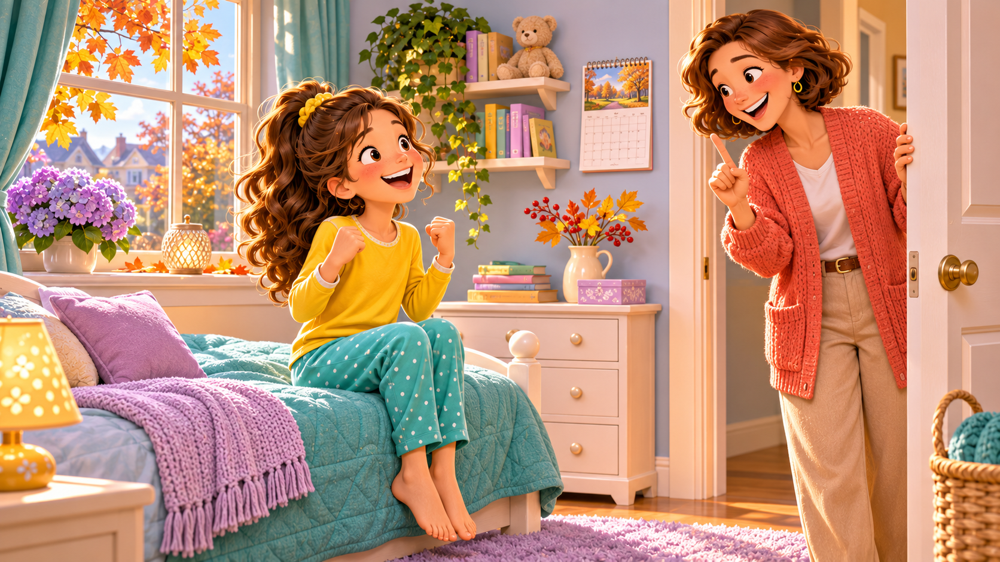
It was Friday, the thirteenth of November. Julia woke up in a good mood. She did not believe in superstitions.
Her mother came into the room. «Be careful today, dear,» she said. «It is Friday the thirteenth.»
«Oh, mum,» Julia laughed. «Nothing bad will happen. Emma and I have a plan!»
What was the plan? Julia and Emma decided to break all the rules of bad luck in one day — and see what happens.
Chapter two · The challenge
At nine o'clock, Julia met Emma at the school gate. «Ready?» asked Emma. She was holding a small notebook.
«Ready,» said Julia. «What is first on the list?»
Emma opened the notebook. «Number one: walk under a ladder.»
Behind them, two workers were painting the school fence. Their ladder stood against the wall. Julia looked at Emma. Emma looked at Julia. They took a deep breath — and walked under the ladder together.
Nothing happened. They laughed.
Chapter three · More «bad luck»
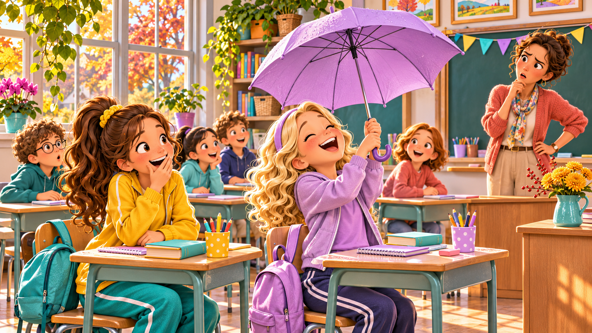
During the first lesson, Emma opened her umbrella indoors. The teacher gave her a strange look but said nothing. Nothing bad happened.
At lunch, Julia spilled salt on the table. On purpose. She did not throw it over her shoulder. She did not say sorry. She just ate her sandwich. Nothing bad happened.
At the end of lunch, a black cat walked across the playground. Emma ran after it and gave it some milk. The cat purred happily. Nothing bad happened.
Chapter four · The surprise
After school, Julia and Emma were walking home. Suddenly Julia stopped. She saw something on the pavement.
«Emma! Look! It is a five-pound note!» Julia picked it up. Her eyes were very big.
Emma smiled. «See? I told you. No bad luck.»
Then Emma's phone rang. It was her mum. «Emma, you won the drawing competition! The teacher called me. Well done!»
Julia and Emma looked at each other and laughed.
«So,» said Julia, «is Friday the thirteenth really unlucky?»
«No,» said Emma. «It is only as lucky or unlucky as you make it. Luck is what you decide to see.»
— The End —
Did you understand? · True / False / Not Stated
- Julia woke up in a bad mood.
TF (good mood)NS
- Julia and Emma made a plan together.
TFNS
- Emma was holding a pink notebook.
TFNS (colour not mentioned)
- The workers were painting the school roof.
TF (the fence)NS
- Emma opened her umbrella outdoors.
TF (indoors)NS
- Julia spilled salt on purpose, not by accident.
TFNS
- The black cat was friendly — Emma gave it milk and it purred.
TFNS
- Julia found a ten-pound note on the pavement.
TF (five pounds)NS
Fill the gaps · retell the story
It was Friday the 13th. Julia woke up in a good . She did not believe in . She and Emma had a — to break every rule of bad luck in one day.
At nine o'clock, they met at the school gate. First, they walked under a together — they took a breath and did it. During the first lesson, Emma opened her umbrella . At lunch, Julia salt on purpose. Then a black walked across the playground, and Emma gave it some milk.
After school, Julia found a five-pound on the pavement, and Emma won the drawing . The day was not unlucky at all.
12 English luck idioms
Which idiom fits? · fill the gap
- I have an important interview tomorrow. Please, keep your !
- Everything is going well right now — !
- Emma is on stage tonight. Julia said to her: «!»
- He passed the first two exams easily. But he shouldn't on the third.
- «Will my little brother ever clean his room?» — «!»
- I won the lottery with my first ticket. Just .
- I failed my driving test twice. But the third attempt was great — .
- Don't say we'll win — you'll it!
5 personal speaking cards · 2–3 minutes each
Card 1 · Retell the story in 2 minutes
Retell Julia and Emma's story in your own words. Structure:
1️⃣ Set-up: who, where, when · 2️⃣ The challenge: what they decided to do · 3️⃣ 4 events at school · 4️⃣ Twist: what good things happened · 5️⃣ Message: what the girls learned.
Idioms to try: knock on wood · fingers crossed · a stroke of luck · when pigs fly.
Card 2 · Your own Friday the 13th
Imagine YOU are Julia today. Tell what you would do on your own Friday-13 challenge:
«If today was my Friday the 13th challenge, I would...»
— 3 unlucky actions you would try · and 1 action you would NOT do because it feels really scary. Why not?
Idioms: better safe than sorry · to push your luck · to count your lucky stars.
Card 3 · Role-play · talk to superstitious grandma 👵 · audio inside
Your grandma is very superstitious. She says: «Don't go out today, it's Friday the 13th!» You want to go to the cinema with a friend. What do you answer? Explain politely why you don't believe — but be kind.
🎧 Listen to grandma's opening lines, then answer her out loud.
Idioms: better safe than sorry · fingers crossed · a stroke of luck. Start: «Grandma, I understand you, but...»
Card 4 · Compare superstitions · UK vs Russia 🇬🇧 vs 🇷🇺
Compare 3 British and 3 Russian superstitions. What is common? What is different? Which one, in your opinion, is the funniest?
Useful structure: «In the UK, people believe... In Russia, we believe... The strangest one, I think, is...»
Idioms: to jinx · a lucky charm · when pigs fly.
Card 5 · Debate · «Superstitions help us OR hurt us?»
Mini-debate. Speak 1 minute FOR, then 1 minute AGAINST:
✅ FOR: «Superstitions are good because they make life more fun / connect us to our family / give us hope...»
❌ AGAINST: «Superstitions are bad because they make people afraid / stop them from trying new things...»
Idioms: to count your lucky stars · third time's the charm · better safe than sorry.
🎤 20 rapid-fire questions · 30 sec each
- Do you believe in superstitions? Why or why not?
- What is the UNluckiest number in Russia for you — if any?
- Are you afraid of black cats? Why not?
- Have you ever broken a mirror? What happened next?
- Who in your family is the MOST superstitious person?
- What do you do when you accidentally spill salt?
- Is there a lucky charm somewhere in your house? Describe it.
- What small thing are YOU slightly superstitious about?
- Would you walk under a ladder today? Honestly?
- What is one Russian superstition that English people don't have?
- What day of the week is lucky for you? And unlucky?
- If Friday the 13th is unlucky — what is the luckiest day in your year?
- Describe Julia's grandma in 3 adjectives.
- Are superstitions more for older people or younger people?
- What is the strangest superstition you have ever heard?
- Have you ever had «beginner's luck»? When?
- Do Russians say something like «knock on wood»? What?
- What do athletes and musicians do for good luck before a show?
- When was your last «stroke of luck»? Tell the story in 2 sentences.
- If you had to BELIEVE in exactly ONE superstition forever, which one? Why?
🎤 Describe the picture · 2 min each
Picture A · the school gate · morning
Julia and Emma meet at the school gate before their challenge. Describe their faces, clothes, the weather, the mood. What are they discussing right now?
Useful: to be in a good mood · fingers crossed · to take a deep breath · to feel curious.
Picture B · under the ladder
The girls are walking under a ladder. Where is the ladder? What are the workers doing? How do Julia and Emma look — scared or amused? Who do you think will step through first?
Useful: to walk under a ladder · on purpose · to push your luck · a stroke of luck.
Picture C · umbrella in the classroom
Emma has opened her umbrella right in the classroom. What is the teacher doing? How do other children react? What will the teacher say in 5 seconds?
Useful: to open an umbrella indoors · to give someone a strange look · bad luck · to say nothing.
Picture D · five pounds on the pavement
Julia has found a five-pound note. Emma is on the phone (her mum is calling about her win). What day is it? What time of day? Describe their reactions. What will they do with the money?
Useful: a stroke of luck · to count your lucky stars · fingers crossed · to be in luck.
🎤 Guess the superstition · listen & guess
🎤 Sight translation · speak the English version out loud
- Я не верю в суеверия. →
- У моей бабушки есть талисман. →
- Не рассыпай соль! →
- Держу за тебя кулачки! →
- Чёрный кот перешёл мне дорогу. →
- Это была просто удача новичка. →
- Постучи по дереву! →
- Когда рак на горе свистнет. →
- Я специально рассыпала соль. →
- Не сглазь! →
- Это была пятница тринадцатое. →
- Юля и Эмма нашли пятифунтовую купюру. →
- Эмма выиграла конкурс рисования. →
- Удача — это то, что ты решаешь замечать. →
- Лучше перестраховаться, чем потом жалеть. →
🎤 Continue the story · 1 min each
Starter 1
«It was Friday the 13th. I woke up and immediately I saw...»
Starter 2
«I was walking home when a black cat jumped out and...»
Starter 3
«I broke a mirror this morning. Fifteen minutes later, something strange happened...»
Starter 4
«I was so sure that I would fail the test, but then...»
Starter 5
«Yesterday was the unluckiest day of my life. First, my bus...»
🎤 You are a journalist · interview Julia and Emma
Your 7 questions (fill in your own 3 more)
Q1 (given): «Girls, why did you decide to do this challenge in the first place?»
Q2 (given): «What was the scariest thing on your list? Why?»
Q3 (given): «Did anything actually BAD happen during the day — be honest!»
Q4 — your question: ______________________________________
Q5 — your question: ______________________________________
Q6 — your question: ______________________________________
Q7 (final, given): «What would you say to someone who IS very superstitious — like a grandmother?»
Which helper verb starts the question?
- ___ Julia a schoolgirl?
- ___ Emma Julia's best friend?
- ___ you afraid of Friday the 13th?
- ___ the cat black?
- ___ Emma and Julia in the playground?
- ___ you believe in superstitions?
- ___ Emma like cats?
- ___ I ready for school?
- ___ Julia feel scared in the morning?
- ___ the pupils drawing a picture now?
- ___ your mum say «knock on wood»?
- ___ it a lucky day for Julia at the end?
Rule reminder. am only with «I». is with he / she / it / singular thing. are with you / we / they / plural. do with I / you / we / they. does with he / she / it.
Which Wh-word starts the question?
- ___ is Julia's best friend? (Emma.)
- ___ does the story take place? (At school, in the playground.)
- ___ is the date of the story? (Friday the 13th of November.)
- ___ does Emma give the cat? (Some milk.)
- ___ is Julia scared in the morning? (Because it is Friday the 13th.)
- ___ does the cat walk across the playground? (At the end of lunch.)
- ___ do you feel today, Julia? (I feel fine.)
- ___ many superstitions are in Unit D? (Twelve.)
- ___ runs after the black cat? (Emma.)
- ___ does the story end — happy or sad? (Happily.)
- ___ do we knock on wood? (When we want good luck to continue.)
- ___ is a five-pound note? (British money, paper, 5 pounds.)
The six Wh-words. What = что · Where = где · When = когда · Why = почему · Who = кто · How = как (also: How many / How much / How often / How long).
Write Julia's diary entry for Friday the 13th
📔 Julia's diary · Friday, 13 November
Structure: (1) morning: how I felt · (2) the plan with Emma · (3) 3 things we did at school · (4) the surprise at the end · (5) what I learned.
📦 Vocab Capsule · the core of the lesson
🎯 Finish · 5 translations EN → RU
- Fingers crossed for my test tomorrow! →
- She spilled salt on purpose. →
- Everything is going well — knock on wood! →
- Luck is what you decide to see. →
- He will say sorry when pigs fly. →